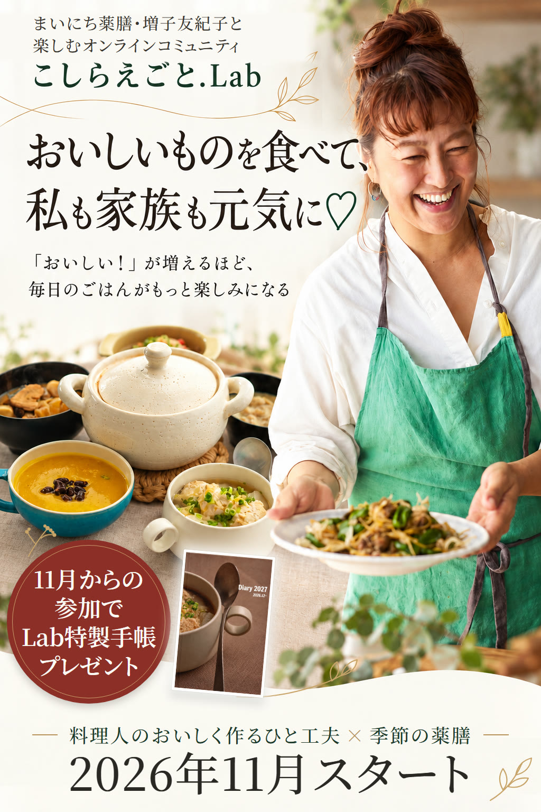
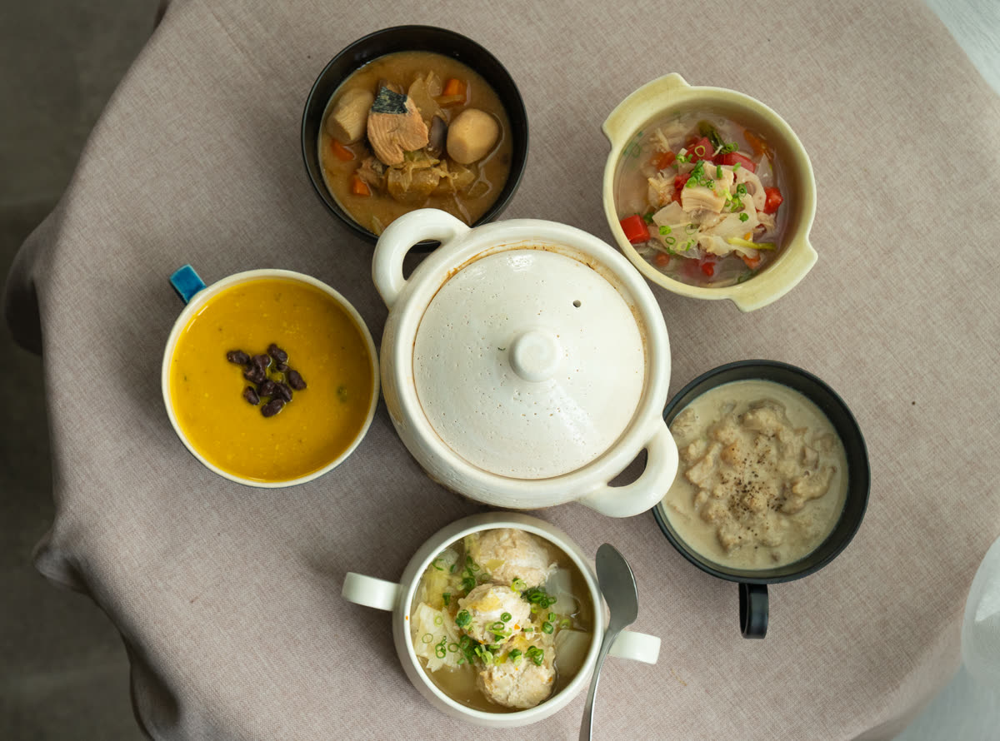
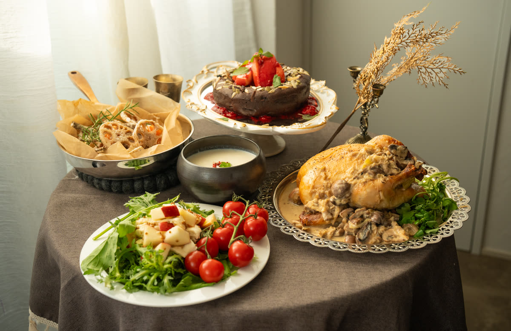
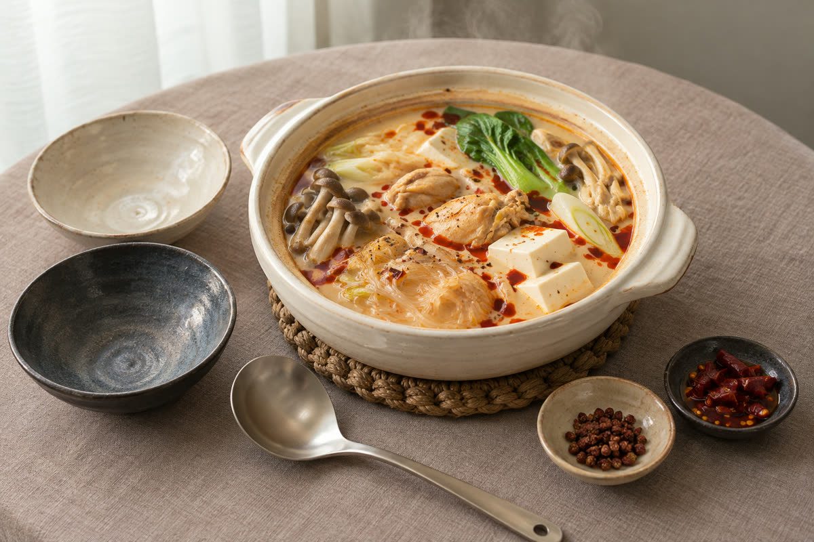
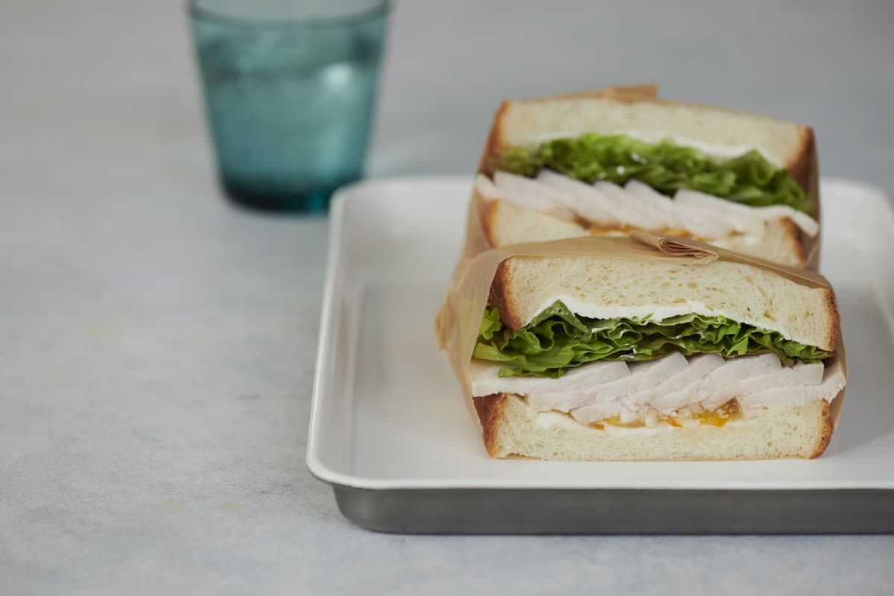
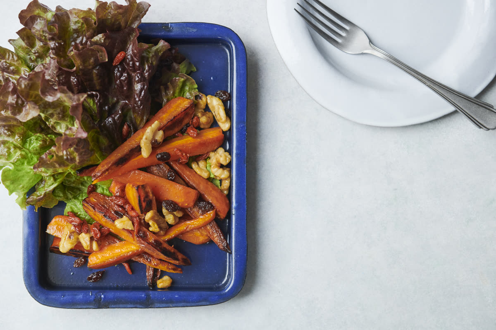
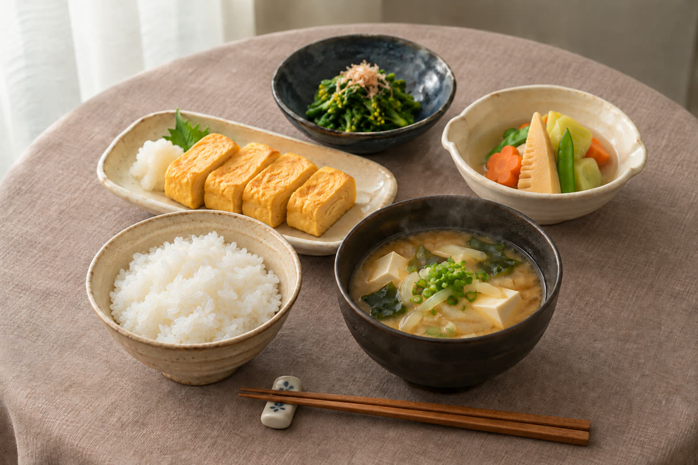
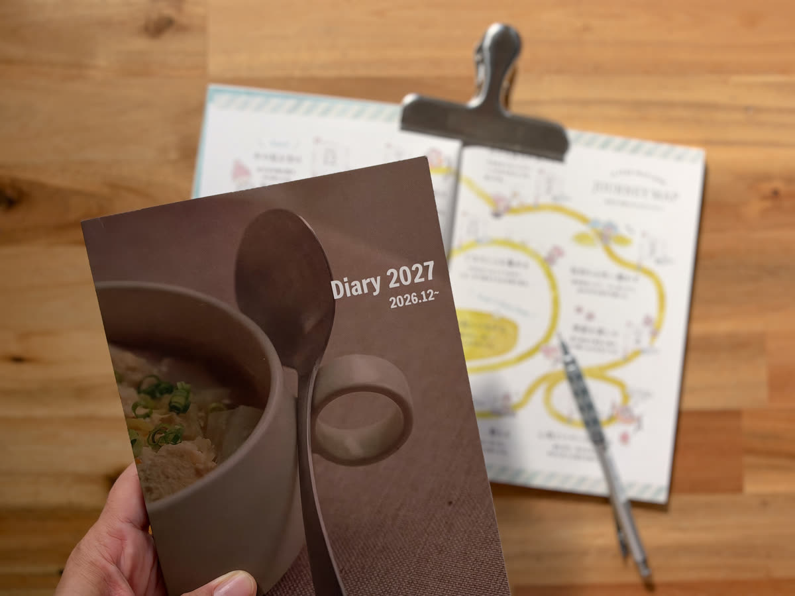
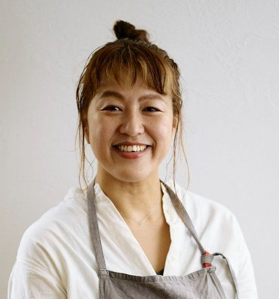

おいしいものを食べて、私も家族も元気に♡ 「おいしい！」が増えるほど、毎日のごはんがもっと楽しみになる！ 料理人のおいしく作るひと工夫 × 季節の薬膳 まいにち薬膳・増子友紀子と楽しむオンラインコミュニティ こしらえごと.Lab 11月からの参加で特別プレゼント！ Lab特製手帳プレゼント♡ 2026年11月スタート！
体のために、我慢したり、難しいことを頑張ったりしなくても大丈夫。
おいしい料理を楽しみながら、季節に合わせて自分と家族の体をいたわる。
そんな食卓を、これから始めてみませんか？
体にいいものを食べたい。
でも、おいしいものも
諦めたくない！
毎日のごはん。
家族の健康も気になるし、自分の体のことも、そろそろ大切にしたい。
でも、健康のためだからといって、味気ない食事ばかりではつまらないですよね。
せっかくなら、おいしいものを食べたい！
家族にも「これ、おいしい！」って喜んでもらいたい。
そして、どうせ毎日ごはんを作るなら、食べる楽しみも、作る楽しみも、もっと増やしたい。
そんなふうに思いませんか？
実は、薬膳って、特別な食材を使ったり、難しい料理を作ったりすることだけではないんです。
スーパーで買える身近な食材でも、季節や自分の体に合わせた食べ方を楽しむことができます。
さらに、料理人のおいしく仕上げるコツを知れば、いつもの食材がもっとおいしい一皿に。
おいしいものを楽しむことも、自分と家族を大切にすることも、どちらも叶えたい。
そんな方におすすめなのが、こしらえごと.Labです。
こしらえごと.Labって、どんな場所？
おいしいから、作りたくなる。
楽しいから、続けたくなる♡
こしらえごと.Labは、まいにち薬膳の増子友紀子と一緒に、おいしい料理と季節の薬膳を楽しむオンラインコミュニティです。
例えば、
「これ、作ってみたい！」
と思うお料理を、料理人のコツを学びながら作ってみたり。
季節の薬膳を知って、いつもの食卓に取り入れてみたり。
ときにはヨガで体を動かしたり、お茶会でみんなとおしゃべりしたり。
おいしい料理を中心に、自分の心と体をいたわる時間を楽しめる場所です。
ここで大切にしているのは、難しいことを頑張るよりも、日々の暮らしの中で楽しむこと。
薬膳を完璧に覚えたり、毎日特別な料理を作ったりする必要はありません。
「今日はこれを作ってみようかな♡」
そんな小さな楽しみから始めていただけたら嬉しいです。
11月からは、
おいしい楽しみが
こんなにいっぱい！
毎月「これ食べたい！」が待っている♡
冬から春の季節のお料理レッスン
こしらえごと.Labでは、毎月、季節に合わせたお料理を楽しめます。
料理人だからこそ知っている、おいしく仕上げるひと工夫。
そして、中医学に基づく季節の薬膳の知恵。
その両方を学ぶことで、いつものごはん作りがもっと楽しくなります。

11月
夕方の私を助ける、
発酵スープストック5種類
忙しい夕方、冷凍庫においしいスープがストックしてあったら嬉しくないですか？
11月は、味噌、塩麹、酒粕、野菜麹などを使った発酵スープストックを5種類作ります。
食べたいときに、おいしいスープがさっと用意できる。
忙しい日でも、自分や家族のために温かい一品を出せる。
そんな嬉しいストックを、一緒に作りましょう♡
- お料理で学べること
- 発酵調味料の使い方、素材のうまみを引き出すコツ、冷凍ストックの作り方。
薬膳の学び：冬の季節観・脾胃・閉蔵

12月
今年のクリスマスは、
おうちでフレンチ！
今年のクリスマスは、ちょっと特別なごちそうを作ってみませんか？
塩麹ハーブの丸鶏ロースト。
帆立とマッシュルームの白いソース。
冬野菜やポタージュ、黒胡麻ショコラまで。
「これ、おうちで作ったの？！」
そんな声が聞こえてきそうな、素敵なクリスマス料理です♡
料理人のおいしく作るコツを学びながら、特別な日の食卓を楽しみましょう。
- お料理で学べること
- 丸鶏ローストやソースの作り方、おうちでごちそう料理をおいしく仕上げる工夫。
薬膳の学び：冬の薬膳茶
※12月は料理レッスン内の15分薬膳講座は行わず、月例勉強会で冬の薬膳茶を取り上げます。

1月
寒い冬に食べたい、
私好みの麻辣湯鍋
寒い日には、あったかくておいしいお鍋が最高！
1月は、鶏だしをベースにした香り豊かな麻辣湯鍋。
辛さも自分好みに調整できるので、家族みんなで楽しめます。
お店で食べるような麻辣湯を、おうちでも作れるようになったら嬉しいですよね♡
- お料理で学べること
- 鶏だしの麻辣湯鍋、辛さの調整方法、家族で楽しめる味付けの工夫。
薬膳の学び：寒熱・脾胃
そして春には、
こんなお料理も待っています♡
季節が変われば、おいしい食材も変わる。
冬のお料理を楽しんだあとは、春ならではの食卓を楽しみましょう！

2月
明日の朝が楽しみになる、おうちカフェ朝食
ふわふわ卵やパンに合うお料理。
いつもの朝ごはんに料理人のひと工夫を取り入れて、おうちでカフェ気分を楽しみます。
薬膳の学び：立春

3月
春野菜がもっと好きになる、春色デリ
春の食材を使った、彩り豊かなおいしいデリ。
パンにもごはんにも合わせやすい、春らしいお料理です。
薬膳の学び：春の風

4月
いつもの和食がもっと好きになる、だしと味噌の和ごはん
身近なだしと味噌のおいしさを引き出して、いつもの和食をもっとおいしく。
毎日の食卓にも取り入れやすい春の和ごはんを楽しみます。
薬膳の学び：新生活の食養生
※春の薬膳テーマは予定です。正式な内容は確定後にご案内します。
※薬膳は中医学の伝統理論に基づく日々の食養生です。医療上の診断や治療に代わるものではありません。
薬膳を知ると、
いつもの食卓が
もっと楽しくなる！
同じ食材でも、季節によって取り入れ方を工夫したり。
体の様子に合わせて、食べ方を考えてみたり。
薬膳の知恵を少しずつ知っていくと、普段のお買い物やお料理にも新しい楽しみが生まれます。
「今日は、こんな食材を使ってみようかな」
「この時期は、こんな食べ方もいいんだ！」
そんな小さな発見が増えていくんです。
しかも、こしらえごと.Labでは、知識を学ぶだけではありません。
実際にお料理を作りながら、食べながら、楽しく薬膳に親しめるのが魅力です。
難しい勉強を頑張るより、おいしいお料理を楽しみながら、自然と薬膳の知恵が増えていく。
そんな半年を過ごしてみませんか？
お料理だけじゃない！
心も体もいたわる
楽しい時間♡
健康のために大切なのは、食べることだけではありませんよね。
たまには体を動かしたり、ゆっくり休んだり、誰かと楽しくおしゃべりしたり。
そんな時間も大切にしたい。
こしらえごと.Labでは、お料理と薬膳のほかにも、季節の暮らしを楽しむ活動をご用意しています。
こよみごと
季節の移り変わりや暦に触れながら、日々の暮らしを楽しむ時間。
ヨガ
ゆっくり体を動かしながら、自分の体に目を向ける時間。
もちろん、全部に参加する必要はありません。
そのときの自分が「これ楽しそう！」と思うものから参加してくださいね。
おいしく食べることも、自分をいたわることも、楽しく暮らすことも。
全部、毎日の中で大切にしていけたら嬉しいですよね♡
※参加期間中は、こしらえごと.Labの活動すべてに参加できます。
11月からの参加で特別プレゼント！
Lab特製手帳を
プレゼント♡

今回、11月からラボに参加してくださる皆さんに、嬉しいプレゼント企画をご用意しています！
それが、こしらえごと.Lab特製手帳♡
これから作ってみたいお料理。
食べたいもの。
家族と楽しみたいこと。
自分のためにやってみたいこと。
そんな毎日の楽しみを、手帳にもいっぱい書き込んでほしいなと思っています。
これからの半年、どんなおいしい時間を過ごそうかな？
そんなふうに、未来を楽しみにできる手帳になったら嬉しいです。
11月在籍の方が対象となる特別プレゼント企画です！
※冬3か月・冬春6か月のどちらも対象です。
※専用のお申し込みリンクから別途手続きが必要です。
※11月中のお届けを予定しています。
※プレゼントのお申込み条件・期間はこしらえごと.Labご入会後にご案内します。
半年後、食卓の楽しみが
こんなに増えているかも♡
ちょっと想像してみてください。
冷凍庫には、自分で作った発酵スープのストック。
クリスマスには、手作りのフレンチで家族とごちそうを楽しんで。
寒い冬には、おいしい麻辣湯鍋を囲んで。
春になったら、いつもの朝ごはんをおうちカフェ風にしたり、春野菜のデリを作ったり。
季節が変わるたびに、おいしいお料理の楽しみが増えていく。
そして、季節の薬膳の知恵も少しずつ身についている。
「今日のごはん、何にしよう？」
そんな毎日のお料理が、
「今度はこれを作ってみようかな♡」
という楽しみに変わっていたら、素敵ですよね。
おいしい料理を楽しみながら、自分と家族の体も大切にできる。
そんな暮らしを、これから一緒に始めませんか？
2026年11月スタート！
おいしく食べて、
私も家族も元気に♡
冬から春まで楽しもう！
こしらえごと.Labでは、この冬から春にかけて、季節のおいしい料理と薬膳の学びをご用意しています。
毎月「これ作りたい！」と思えるお料理に出会いながら、食べる楽しみも、暮らしの楽しみも増やしていきましょう。
おすすめ！冬も春もたっぷり楽しめる
冬・春6か月パック
30,000円（税込）
2026年11月〜2027年4月
1か月あたり5,000円。
冬から春まで、
おいしい楽しみがずっと続く♡
6か月パックに含まれる内容
- 11月〜4月の季節のお料理レッスン
- 期間中の薬膳勉強会
- 期間中のこしらえごと.Labの活動すべて
- 11月在籍者向けLab特製手帳プレゼント企画
冬のおいしい発酵スープから、春野菜の彩り豊かなデリまで。
毎月のお料理が楽しみになる半年を、一緒に過ごしましょう♡
冬・春6か月パックに申し込む
※期間終了後の自動継続はありません。
冬の3か月だけ楽しみたい方へ
冬3か月パック
15,000円（税込）
2026年11月〜2027年1月
冬の発酵スープ、クリスマス料理、麻辣湯鍋など、11月〜1月のお料理と薬膳を楽しめます。
期間中のラボの活動すべてに参加でき、11月の手帳プレゼント企画も対象です。
冬3か月パックに申し込む
※期間終了後の自動継続はありません。
よくあるご質問
薬膳初心者でも参加できますか？
はい。身近な食材やお料理を通して薬膳を学ぶ内容です。初めての方も、お料理を楽しみながら学んでいただけます。
お料理が得意ではなくても大丈夫ですか？
もちろんです。料理人のおいしく仕上げるコツを学びながら、ご自身のペースで楽しんでください。
全部の活動に参加する必要がありますか？
ありません。興味のある活動から、ご自身のペースでご参加いただけます。
3か月と6か月で参加できる内容は違いますか？
参加期間中のラボの活動は同じです。違いは参加期間のみです。
いつから参加できますか？
2026年11月1日からです。2026年10月の料理レッスンとレシピは含まれません。
自動継続はありますか？
ありません。期間終了後も参加をご希望の場合は、改めてお手続きが必要です。
増子友紀子からのメッセージ

こんにちは、増子友紀子です♡
毎日のごはんって、せっかくならおいしく、楽しく作りたいですよね。
そして、自分や家族の体にも、ちょっといいことができたら嬉しい。
私は、おいしい料理を作ることも、季節の薬膳を知ることも、自分を大切にすることにつながっていると思っています。
でも、難しく考えたり、頑張りすぎたりしなくていいんです。
「これ、おいしそう！」
「今度作ってみたい！」
そんな気持ちから、気軽に始めてみてほしいなと思います。
こしらえごと.Labでは、おいしい料理を楽しみながら、季節の薬膳を学び、毎日の暮らしを楽しむ時間をご用意しています。
これからの半年も、おいしいこと、楽しいことをいっぱいしていきましょうね♡
皆さんと一緒に過ごせるのを楽しみにしています！
増子友紀子まいにち薬膳／こしらえごと.Lab
増子 友紀子プロフィール
国際薬膳師 / 栄養士 / 料理家
料理人歴20年。フランス料理店で10年修行後、東京・自由が丘にて「リストランテ ヴィコレット」のオーナーシェフに。
結婚・出産を機に、「毎日のごはんで体をケアする」大切さを実感し、2016年より国際薬膳師として活動を開始。
介護と育児を通して、"毎日の食と暮らしから、今の自分を大切に生きていく"をモットーに、日々の食卓から元気になる薬膳のヒントを届けている。
毎月のオンライン料理教室「おまもりレシピ」や、薬膳と共に"自分を大切にする暮らし"を楽しむオンラインコミュニティ「こしらえごと.Lab」を主宰。
実践しながら薬膳を学べる「まいにち薬膳®」講座は、自宅講座を含め受講者数のべ6,500人を超える。
料理の作り方だけでなく、日常の出来事を紐解きながら薬膳を伝えるスタイルが好評で、暮らしを豊かにするヒントを広く発信。Instagramのフォロワーは現在16万人以上。
忙しい毎日の中でも、薬膳を"続けられる形"にし、さらに"届けられる形"にする。その実践の積み重ねから生まれたのが、「まいにち薬膳®」です。学んで終わりではなく、暮らしに活かし、誰かに届け、仕事へつなげていく。そんな薬膳の新しい形を、今、多くの方に伝えています。
著書
- 『身近な食材でからだが喜ぶ、野菜レシピ』
エムディエヌコーポレーション
- 『心とからだを整える 春夏秋冬薬膳レシピ』
マイナビ出版
- 『二十四節気を楽しむ薬膳パスタ』
エムディエヌコーポレーション
- 『心とからだを整える 薬膳カフェごはん』
マイナビ出版
- 『受験薬膳』
グラフィック社
メディア出演・掲載
- 小学館『女性セブン』
2023年8月31日号／2023年4月28日号／2025年7月3・10日号
- マガジンハウス『Hanakoママ』
- カナエル『くらしの窓口』
- 関西電力『withはぴe』…他レシピ掲載・監修多数
- ラジオNIKKEI「前田公輝のヒラケテヒラク」ゲスト出演
- 「SALON AWARD」ゲストスピーカー
企業コラボ
おいしいものを食べて、
私も家族も元気に♡
毎日のごはんが、もっとおいしく。
季節の食材を知るのが、もっと楽しく。
自分と家族を大切にする時間も増えていく。
そんな冬と春を、一緒に過ごしませんか？
11月からの参加で、Lab特製手帳プレゼント企画もご用意しています♡
料理人のおいしく作るコツと季節の薬膳を楽しみながら、これからの半年をもっとおいしく、もっと楽しく！
こしらえごと.Labでお待ちしています。
冬から春まで楽しむならこちら！
お申し込み方法
- STEP 1お申し込み
ご希望のプランのボタンからお進みください。
- STEP 2お支払い
お申し込み内容をご確認のうえ、決済をお願いいたします。
- STEP 311月1日から参加スタート
ラボのお料理レッスンや薬膳の学びをお楽しみください。
※お申し込みの際はプランの利用規約・支払いの時期、方法・サービス提供の時期・返品の取り扱い方法等、すべてご確認・ご了承の上お手続きください。